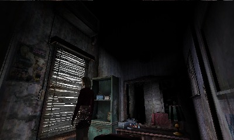
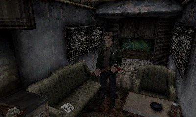
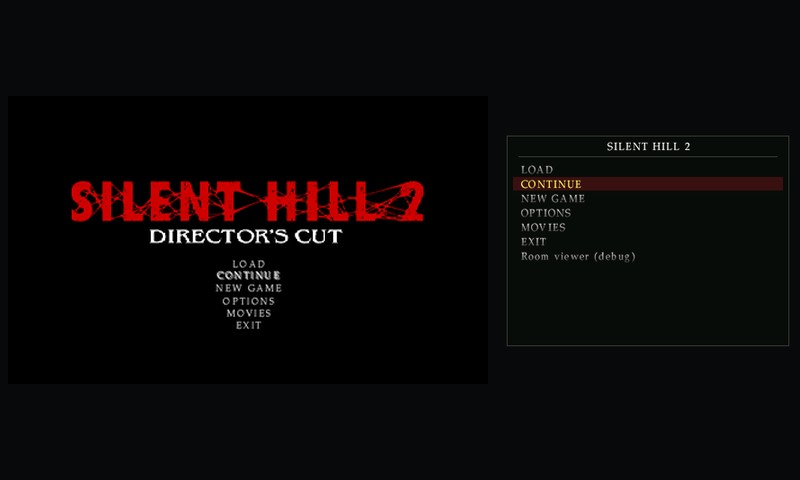

Every ending
Every area, puzzle and boss. All six endings, New Game+ and Born From a Wish.

v0.2.2
A native Nintendo 3DS port of the PC Director’s Cut, with the Enhanced Edition’s fixes built in.

Also: the lake boat with the PC’s rowing controls, quick turn and strafing, all 128 cutscenes and ten save files.
Every area, puzzle and boss. All six endings, New Game+ and Born From a Wish.

The game on top. The map, items and memos on the touch screen.


The PC game’s code, rewritten in C. It runs on the 3DS itself and draws with its GPU.

The PC’s fog layer, down to James pushing it aside and the puffs from vents.

Every fix that applies is built in and always on. The packer uses EE packs if you have them.

Full settings on the New 3DS. A lighter 30 fps profile for the original 3DS and 2DS.

Every part of the PC game is in.
From your own copy of the PC game. This project doesn’t host or link to game files.
Yes, with a lighter profile that aims for 30 fps: fewer fog sprites, fewer streamed town tiles and no character shadows.
No. The game’s code was rewritten in C from the PC exe and runs natively on the 3DS.
Not yet. The packer reads tables at fixed places in the Director’s Cut exe, so it only accepts that build.
No. It’s the 2001 game, rebuilt from the PC Director’s Cut, with Born From a Wish.
A New 3DS or any original 3DS with Luma3DS and FBI, 1.3 GB on the SD card, and your PC copy of the Director’s Cut.